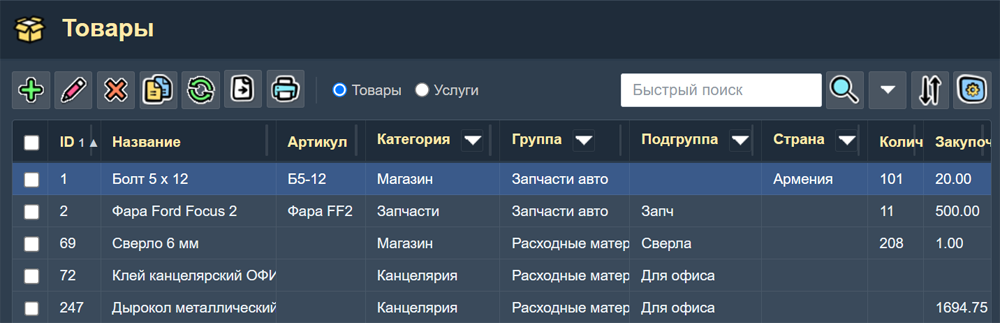
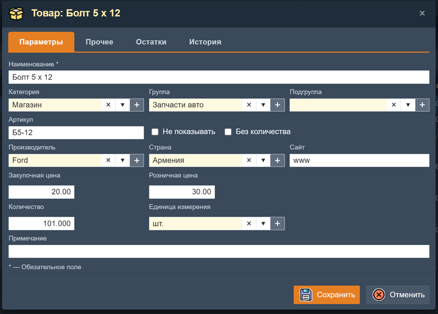
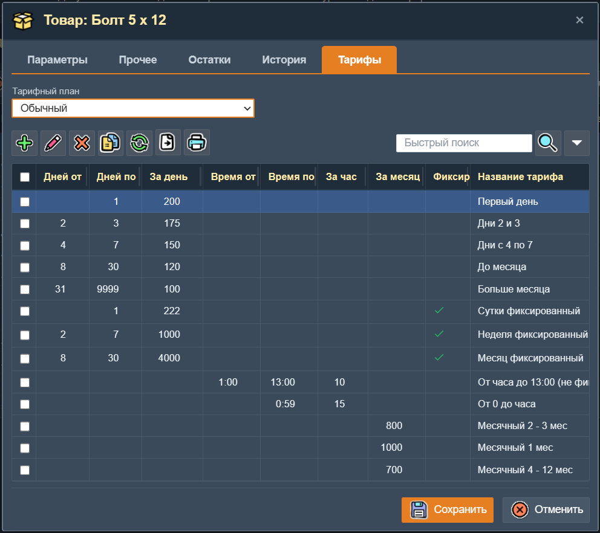
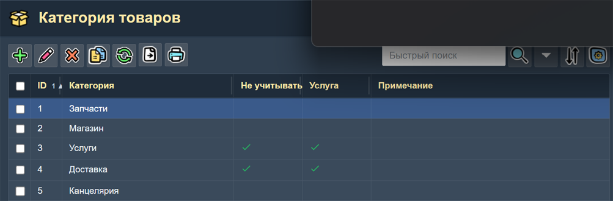
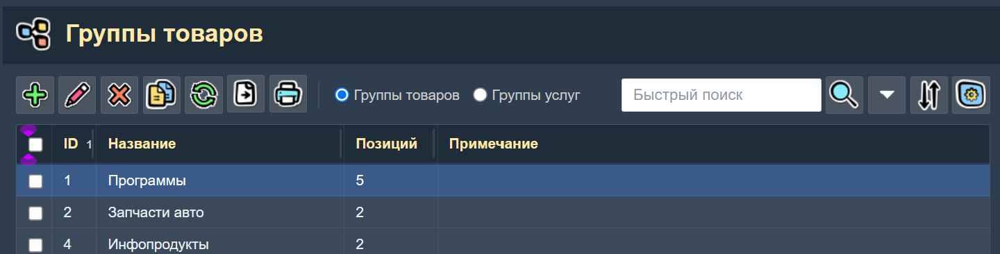
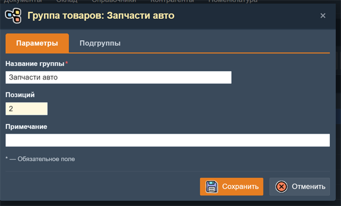
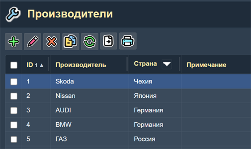
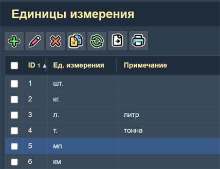
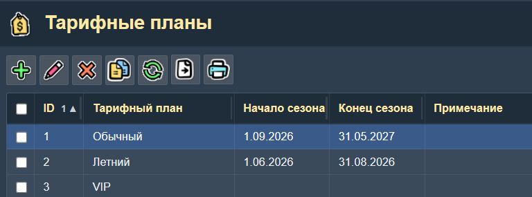

Номенклатура
Раздел Номенклатура охватывает всю справочную информацию о товарах и услугах. Доступ к нему осуществляется через пункт Главного меню Товары и Услуги.
Товары / Услуги
Основной каталог товаров и услуг. Здесь ведётся учёт всей номенклатуры: создаются новые позиции, редактируются существующие, отслеживаются остатки, цены и характеристики.
В верхней части этой страницы находится перекдючатель "Товары - Услуги". Если переключить его в состояние "Услуги", то заголовок страницы этой изменяется на "Услуги" и в таблице выводится каталог услуг.

Таблица товаров / услуг.
Колонки таблицы
- ID — учетный код товара или услуги. Не доступен для изменения.
- Наименование — полное название товара или услуги.
- Штрихкод — цифровой штрихкод (EAN-13, UPC или другой формат).
- Артикул — артикул товара.
- Категория — категория, к которой относится товар.
- Группа — группа, к которой относится товар.
- Подгруппа — подгруппа, к которой относится товар.
- Количество — текущее количество товара на складах.
- Закупочная цена — закупочная цена за единицу.
- Розничная цена — розничная цена за единицу.
- Примечание — произвольный комментарий.

Форма редактирования товара.
Поиск
При помощи поля "Поиск" в таблице можно искать товары по любому полю записи о товаре. В панели "Условия поиска" можно точно задать поля, по которым будет производится поиск.
В заголовках колонок "Категория", "Группа", "Подгруппа" и "Страна" имеется кнопка включения "колоночного фильтра". При нажатии на эту кнопку появляется панель выбора одного или нескольких значений поля для фильтрации.
Печать и экспорт
Из таблицы товаров можно распечатать:
- Список товаров — перечень всех позиций с ценами.
- Ценники — ценники отмеченных товаров для печати на принтере.
- Штрихкоды — наклейки со штрихкодами для маркировки товаров.
Также доступен экспорт таблицы в CSV, Excel и HTML. Экспорт и печать списка товаров делается с учетом всех включенных в данный момент фильтров: фильтр поиска, колоночные фильтры, фильтр "только отмеченные".
Поля формы товара:
Вкладка "Параметры"
- Наименование — обязательное поле. Название товара, отображаемое во всех документах.
- Штрихкод — позволяет сканировать товар с помощью сканера штрихкодов при приходе, продаже или инвентаризации.
- Артикул — уникальный артикул товара.
- Не показывать — признак скрытой записи. Такая запись будет видна только если в параметрах настройки приложения влючен флаг "Показывать все записи".
- Категория — выбор категории из справочника.
- Группа — выбор группы из справочника.
- Подгруппа — выбор подгруппы.
- Производитель — выбор произволителя.
- Страна — выбор страны производства.
- Сайт — ссылка на сайт товара.
- Закупочная цена — цена приобретения товара у поставщика.
- Розничная цена — розничная цена продажи конечному покупателю.
- Количество — текущий остаток товара на всех складах.
- Единица измерения — выбор единицы измерения.
- Без количества — признак того что для данного товара или услуги не ведется учет количества.
- Не вычислять остаток — признак, при котором приложение не контролирует остаток данного товара на складе. Товар всегда считается доступным для выдачи, даже если формальный остаток равен нулю или отрицателен. Полезно для товаров, учёт которых не требует строгого контроля остатков (например, расходные материалы или товары, предназначенные только для аренды).
- Примечание — произвольная текстовая информация о товаре или услуге.
Вкладка "Прочее"
- Описание — большое поле для текстового описания товара.
- Фото — выбор файла фотографии товара.
Вкладка "Остатки"
На этой вкладке расположена таблица, показывающая текущие остатки товара на всех участках.
Вкладка "История"
На вкладке "История" находится таблица, показывающая всю историю движения товара (по имеющимся документам).
Вкладка "Тарифы"
Вкладка "Тарифы" предназначена для настройки тарифов аренды для данного товара. Она отображается только если включен хотя бы один из параметров настройки приложения: «Показывать поле Часов», «Показывать поле Дней» или «Показывать поле Месяцев».

Вкладка «Тарифы» на странице товара.
Над таблицей расположено поле выбора «Тарифный план». По умолчанию выбран первый тарифный план (например, «Обычный»). В таблице отображаются только тарифы выбранного тарифного плана для данного товара.
Колонки таблицы «Тарифы»
- Дней от — начало периода в днях. Видно только если включен параметр «Показывать поле Дней».
- Дней по — конец периода в днях.
- За день — стоимость аренды за один день в данном диапазоне.
- Время от — начало периода в часах (например, 0:00). Видно только если включен параметр «Показывать поле Часов».
- Время по — конец периода в часах.
- За час — стоимость аренды за один час в данном диапазоне.
- За месяц — стоимость аренды за один месяц. Видно только если включен параметр «Показывать поле Месяцев».
- Фиксированный — признак фиксированного тарифа (отображается как иконка «галочка»). Фиксированный тариф не умножается на количество часов, дней или месяцев.
- Название тарифа — название тарифа (например, «Первый день», «Дни 2 и 3», «Сутки фиксированный»).
Форма «Тариф товара»
При добавлении или редактировании тарифа открывается форма со следующими полями:
- Товар — название товара (только для чтения).
- Тарифный план — название тарифного плана (только для чтения).
- Фиксированный тариф — чекбокс. Если установлен, тариф является фиксированным.
- Дней от / по — диапазон дней, к которым применяется тариф.
- За день — стоимость за один день.
- Выходной — стоимость за выходной день (если отличается от дневного тарифа).
- Время от / по — диапазон часов, к которым применяется тариф.
- За час — стоимость за один час.
- Месяцев от / по — диапазон месяцев, к которым применяется тариф.
- За месяц — стоимость за один месяц.
- Название — название тарифа (обязательное поле).
Видимость полей формы зависит от параметров настройки приложения: если параметр «Показывать поле Дней» выключен, то поля «Дней от/по», «За день» и «Выходной» не отображаются. Аналогично для часов и месяцев.
Категории товаров
Справочник категорий товаров. Используется для группировки номенклатуры по общим признакам (например, «Электроника», «Одежда», «Продукты»).

Справочник категорий товаров.
Колонки таблицы
- Категормя — название категории.
- Не учитывать количество — признак того, что для товаров данной категории не нужно учитывать количество.
- Услуга — призак услуги.
- Примечание — произвольное примечание о категории.
Группы и подгруппы
Двухуровневая группировка товаров. Группы объединяют товары по широкому признаку (например, «Бытовая техника»), а Подгруппы уточняют принадлежность внутри группы (например, «Холодильники», «Стиральные машины»).

Справочники групп и подгрупп.
В верхней части этой страницы находится перекдючатель "Товары - Услуги". Если переключить его в состояние "Услуги", то заголовок страницы этой изменяется на "Группы услуг" и в таблице выводится список услуг.
Колонки таблицы групп
- ID — учетный код группы. Не доступен для изменения
- Название — название группы.
- Позиций — количество подгрупп в данной группе.
- Примечание — произвольное примечание группы.
Форма "Группа"
Эта форма имеет те же поля, которые можно видеть в таблице "Группы". Эти поля находятся на вкладке "Параметры" окна формы. На вкладке "Подгоруппы" расположена таблица со списком подгрупп данной группы

Форма группы товаров
Каждая подгруппа обязательно привязана к своей группе.
Производители
Справочник производителей и товаров. Позволяет вести учёт компаний-изготовителей, указывать страну происхождения и контактную информацию.

Справочник производителей.
Колонки таблицы
- ID — учетный код производителя.
- Производитель — название компании-производителя.
- Страна — страна происхождения товара.
- Примечание — дополнительная информация.
В этой таблице имеется "колоночный фильтр" по странам.
Форма производителя включает поля «Производитель», «Страна» и «Примечание». В поле «Страна» можно выбрать страну из справочника стран.
Единицы измерения
Справочник единиц измерения, используемых для учёта товаров. Включает как стандартные единицы (штуки, килограммы, метры, литры), так и любые другие по усмотрению организации.

Справочник единиц измерения.
Колонки таблицы
- Единица измерения — сокращённое обозначение (шт., кг, м, л).
- Примечание — произвольный комментарий.
Тарифные планы
Справочник "Тарифные планы", используется для поддержки нескольих групп тарифов на аренду товаров. Если включен параметр настройки приложения "Использовать сезоны тарифных планов", то в записи о тарифном плане появляются два дополнительных поля ввода: "Дата начала сезона" и "Дата конца сезона". При этом тарифный план (а следовательно и тарифы) в документе "Аренда" будут автоматически выбираться в зависимости от сезона, указанного в тарифном плане. Если же сезоны не используются, то тарифный план выбирается вручную на странице документа "Аренда".

Справочник тарифных планов.
Колонки таблицы
- Тарифный план — Название тарифного плана.
- Начало сезона — Дата начала сезона.
- Конец сезона — Дата концаа сезона.
- Примечание — произвольный комментарий.